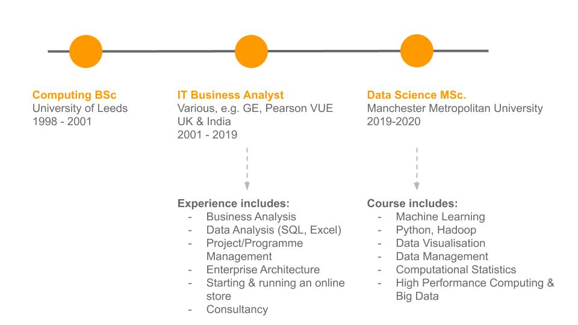

About
I'm an experienced IT professional with a Computing BSc and 18 years experience working in the IT industry, in the UK and abroad. Most of my time has been spent performing Business Analysis but I've also stepped into associated roles including Development Manager, Programme Manager and Architect.
My favourite part of the roles I've done over the years is helping businesses and software development teams to get valuable insights from data. I'm now changing the course of my career to focus on Data Science and I'm currently completing a Data Science MSc.
Timeline and Skills

Outside of Work
When I'm not at work / studying for my Data Science MSc / analysing data for fun, I enjoy running, cycling, swimming and sewing.
I enjoy learning new things and challenging myself. In the past I've:
taught English as a volunteer in a small village in India
completed triathlons including the Outlaw ironman (2.4 mile swim, 112 mile bike ride, 26.2 mile run)
completed bike races (track, road and MTB) and gained the club record for the women's 12 hour time trial
been the Membership Secretary for Manchester Wheelers cycling club
set up and run a small online store to raise money for charity